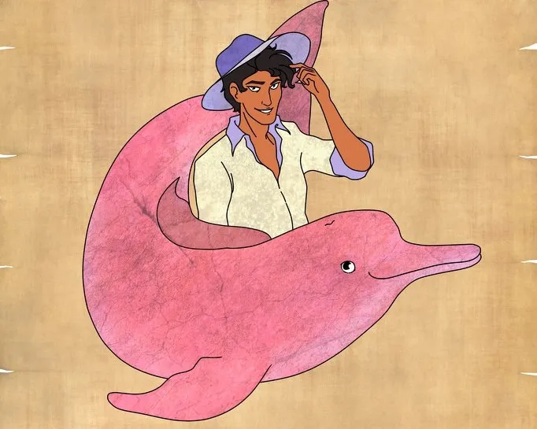

A lenda do boto
O boto-cor-de-rosa é um dos seres do folclore brasileiro, sendo sua lenda muito comum na região Norte. O boto-cor-de-rosa é um animal presente nos rios amazônicos, e, na sua história, ele tem uma conotação negativa. O boto-cor-de-rosa é a lenda de um boto que, transformado em um homem sedutor, parte à procura de mulheres para seduzir. A lenda do boto-cor-de-rosa fala que esse animal se transforma em um homem muito bonito e conquistador, que parte à procura de mulheres para seduzi-las. Existem diferentes versões da lenda, sendo que algumas falam que ele se transforma durante qualquer festa nas comunidades ribeirinhas, e outras, que a transformação só acontece na Lua cheia do mês de junho, durante as festividades de Santo Antônio, São João e São Pedro. O boto, como mencionado, transforma-se em um homem muito bonito, com boa conversa e galanteador. Durante a transformação, ele passa a usar roupas e sapatos brancos, além de um chapéu que tampa o topo de sua cabeça. Esse chapéu seria um disfarce, pois a transformação não é completa: no topo da cabeça estariam as narinas do boto. Sendo assim, o chapéu esconde a grande evidência de que aquele homem é, na verdade, o boto. Existem versões da lenda que falam que o boto procura a mulher mais bonita da festa para seduzi-la, e outras, que ele não procura necessariamente a mais bonita, mas sim uma mulher virgem. Depois de seduzir a mulher, o boto deita-se com ela e, antes do fim da noite, ele a abandona. Essa mulher engravida, e seu filho cresce sem pai, uma vez que o boto voltou para suas águas. Essa lenda era muito utilizada na tradição popular para explicar os filhos sem pai. Assim, todo filho que cresce sem saber quem é o pai fica conhecido como filho(a) do boto.
fonte:https://lereaprender.com.br/
Origem da lenda
Na lenda, o boto-cor-de-rosa se transforma em um homem sedutor que usa roupas brancas. O antropólogo Luís da Câmara Cascudo aponta que a ligação da lenda de cetáceos com atos carnais é antiga e remonta à Grécia Antiga. Câmara Cascudo aponta para o fato de que o golfinho (espécie que se assemelha ao boto) era um símbolo de luxúria para gregos e romanos, que o associavam com o culto de Afrodite (Vênus, para os romanos), a deusa do amor|1|. Além disso, existia literatura que narrava a paixão de golfinhos por homens e mostrava o animal como parte de um fetiche ictiofálico, isto é, a visão do peixe como um falo. Pode ser ressaltado também que os movimentos do golfinho na água eram assemelhados aos do ato sexual. Essa associação do golfinho com a luxúria permaneceu e foi aplicada, no Brasil, ao boto-cor-de-rosa. No entanto, a lenda do boto-cor-de-rosa não estava presente na cultura indígena até o século XVII, e o boto encarado como animal sedutor só se estabeleceu na cultura popular em meados do século XIX. A visão grega do boto como um animal afrodisíaco, símbolo da luxúria, repercutiu em determinadas práticas populares no Brasil. Luís da Câmara Cascudo aponta que partes do corpo dos botos-cor-de-rosa eram tidas como portadoras de poderes mágicos. O olho seco de um boto, por exemplo, era tido como um poderoso amuleto amoroso. Por fim, lendas parecidas com a do boto estão presentes em outros locais da América do Sul, como a Argentina e o Chile, e também em determinados locais da Europa."